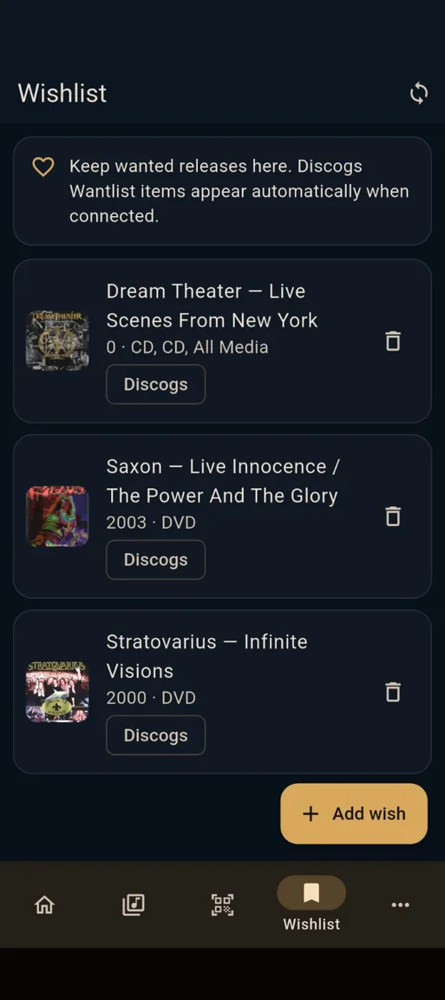

⌗
Scan with Discogs
Use the phone camera to read EAN and UPC barcodes, search Discogs and confirm the exact release immediately.
Catalog CDs, vinyl records, music DVDs and Blu-rays. Scan a barcode or a cover, identify the exact Discogs release, organise each physical copy, track loans and value, maintain a Wishlist, prepare items for sale and keep your data portable.
Android · Independently developed in Portugal · Production release availability is subject to Google Play approval.

Collexall combines fast capture, detailed copy management and Discogs integration with practical tools for locations, loans, Wishlist, valuation, sales and independent backups. Version 1.3.7 improves draft exports for seven destinations, including a new non-blocking completeness summary, cleaner descriptions and normalized barcodes. Android file saving, the collection workflow and Discogs integration remain available.
Collexall — Music Edition v1.3.7 (45)Capture faster, keep better records and stay in control of the collection from the first scan to a loan, a sale or a backup.
Use the phone camera to read EAN and UPC barcodes, search Discogs and confirm the exact release immediately.
Capture many barcodes quickly without internet or API requests, then resolve the pending batch later.
Photograph a cover or choose an image. Text is recognised locally on the device and used to search Discogs.
Search by artist, album or release details when a barcode or cover is not enough.
Explore artists and bands, decades, countries, formats, labels, favourites and other useful collection breakdowns.
Browse the whole collection or narrow it by artist, title, year, country, label, format and collection status.
Store room, furniture, shelf and position so you always know where each copy is physically located.
Record the borrower, loan date and expected return date, then close the loan when the item comes back.
Keep personal ratings, favourites, notes, purchase information and conditions beside the release metadata.
See wanted releases inside Collexall and refresh the Discogs Wantlist when the Wishlist is opened.
See cached Discogs minimum, median and maximum values and refresh them directly from the app.
Explore active asking prices for comparable listings. They are market indications, not confirmed sold prices or guaranteed valuations.
Synchronise with Discogs while preserving local per-copy information and avoiding unnecessary API writes.
Mark one or many copies for sale, set asking price and conditions, and remove them from sale whenever needed.
Keep the final sale price and date so sold copies remain part of the collection history.
Generate a responsive catalogue of available items with covers, prices, search and format / condition filters.
Prepare marketplace-specific drafts for eBay, Discogs, Shopify, WooCommerce, PrestaShop, EIL and a portable generic CSV.
Export to a spreadsheet, edit fields in bulk and import again using stable IDs to update the correct copies.
Save a complete portable backup of the local collection and restore it when required.
Your collection remains useful locally. Internet access is used only when online searches, sync or remote information are needed.
Collexall connects to a Discogs account while keeping its own local collection database. The integration is designed for exact releases and individual physical copies rather than generic album records.
Collexall uses the Discogs API but is not affiliated with, sponsored by, or endorsed by Discogs. Data provided by Discogs remains subject to Discogs terms.

Select the copies you want to sell without maintaining a second catalogue. Collexall keeps sale status on the physical copy, supports batch actions, sold history and a clean standalone HTML export.
Choose the physical copies already marked For Sale, then prepare a destination-specific CSV draft. Collexall keeps your own data in control: it does not publish listings automatically or invent missing values.
Draft listing data, SKU, title, category and optional condition ID, asking price and cover URL.
Music-specific fields, release details, media and sleeve grades, asking price and external reference.
Draft products, HTML descriptions, barcodes, inventory and product image links.
Draft products with stable SKUs, prices, categories, stock and cover links.
Inactive draft rows, EAN/UPC fields, descriptions and categories for merchant review.
A structured list for a specialist music buyer, with edition details and requested prices.
Portable item-level data, Discogs release IDs, locations, notes and image URLs.
A summary counts items and highlights missing asking prices, media or sleeve conditions and barcodes. Continue anyway: incomplete records remain editable drafts, not fabricated listings.
CSV formats are preparation tools. Importers can require additional mandatory fields or mappings. Review platform requirements, category/condition codes and tax treatment before importing or publishing. PrestaShop’s tax-exclusive price field especially requires merchant verification.
Illustrative example, not your live collection.
Genuine screenshots of earlier Collexall builds illustrate the collection workflows. The new export preview is described above; it is not presented as a screenshot.




The master collection stays on the device, but the data is never trapped there. CSV is designed for spreadsheet editing, JSON for complete backup and restore, and HTML for publishing currently available sale stock.
Collexall keeps the fast parts fast without losing the detail that matters once the collection grows.
Scan a barcode, use Smart Cover Scan or search Discogs manually.
Select the correct release and keep edition-specific metadata.
Add location, condition, notes, rating, purchase data and favourites.
Search, filter, analyse, track loans, maintain the Wishlist and prepare sales.
Use Discogs Smart Sync when you want local and remote collections aligned.
Save CSV, JSON and HTML files to a destination you choose.
The Android app is localized across the main collection, scanning, Discogs, Wishlist, loans, sales, data, settings and legal workflows.


Collection data is stored locally. Cover identification can process images on-device; online services are used for Discogs searches and sync, eBay price comparisons or other remote information. Exported files remain under your control.
An independent Android collection manager for people who care about the physical edition — what they own, where it is, its market indications and what happened to each copy.
Current version · v1.3.7 · build 45